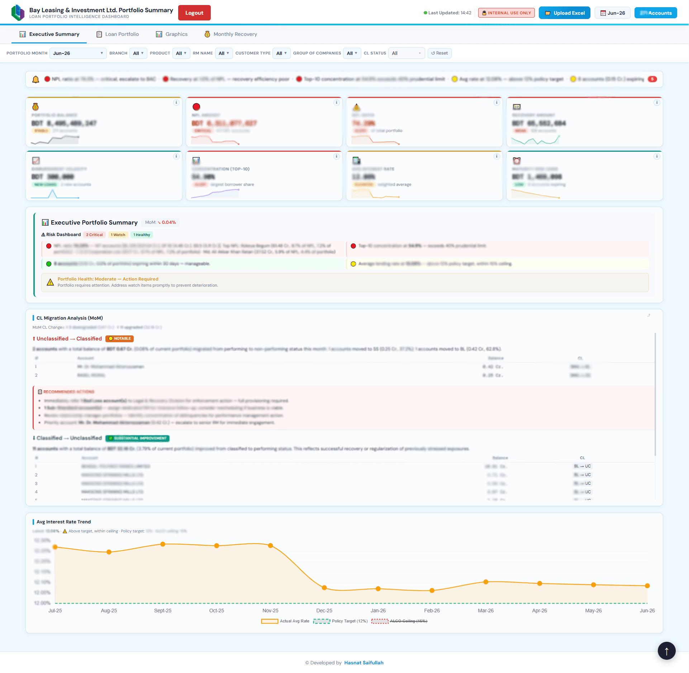
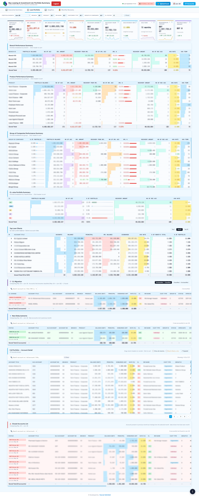
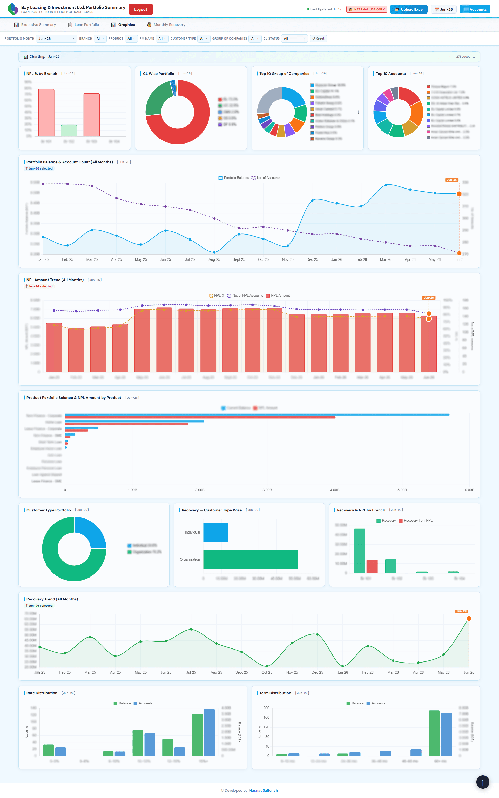
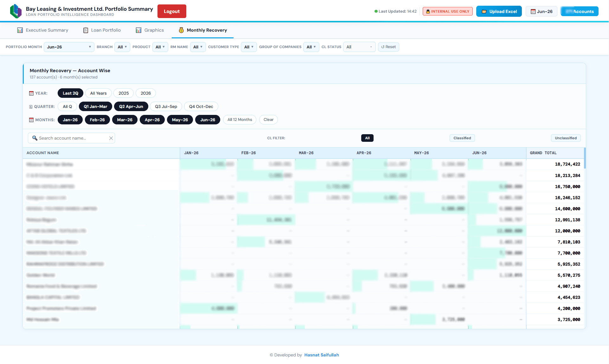
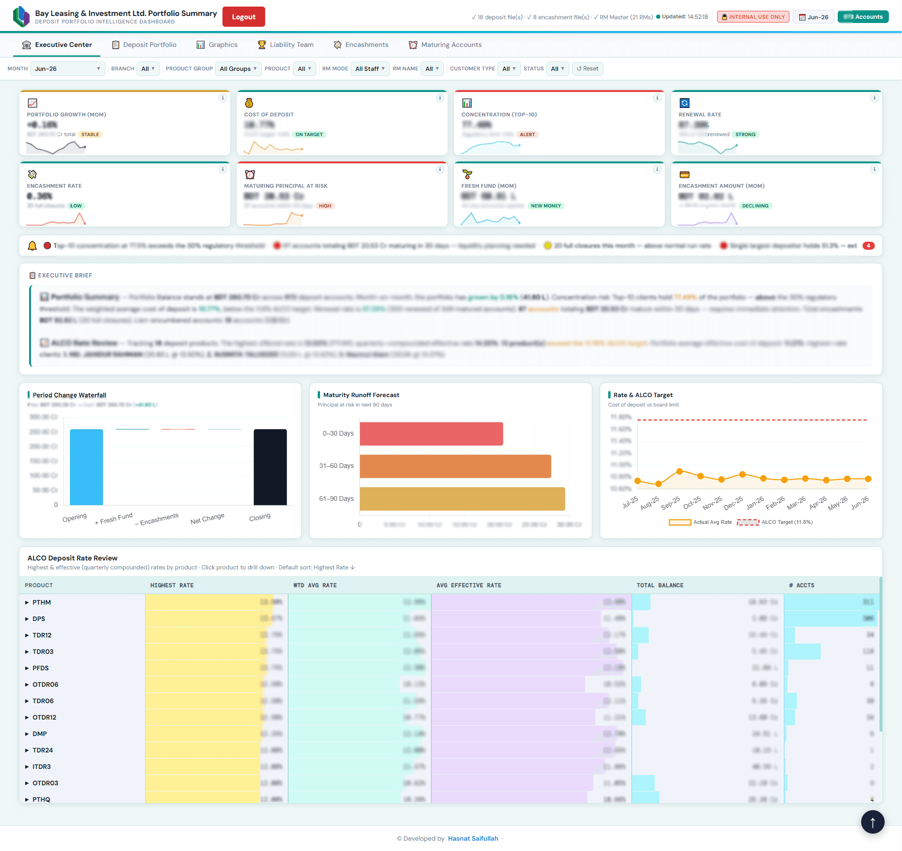
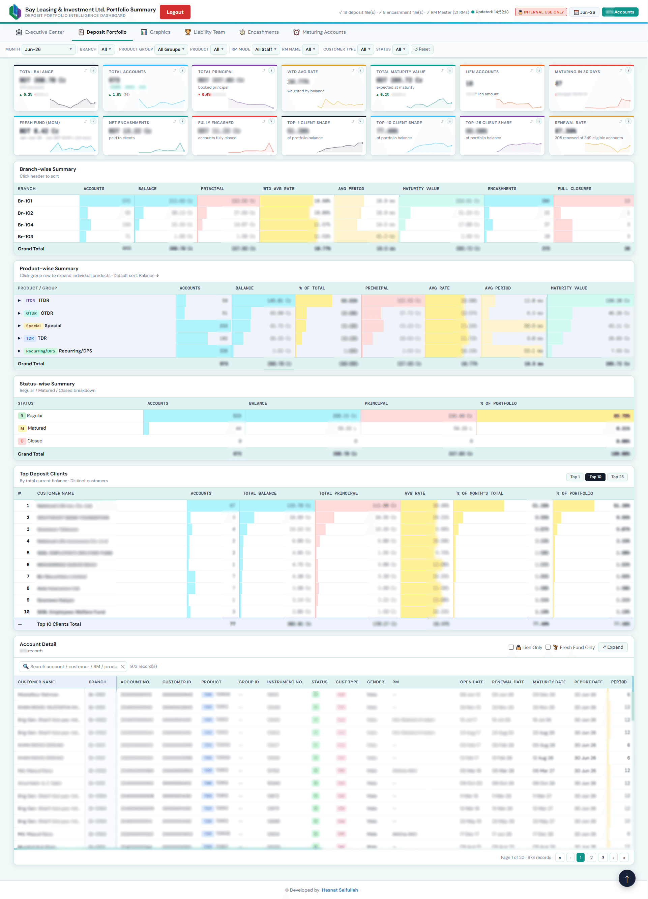
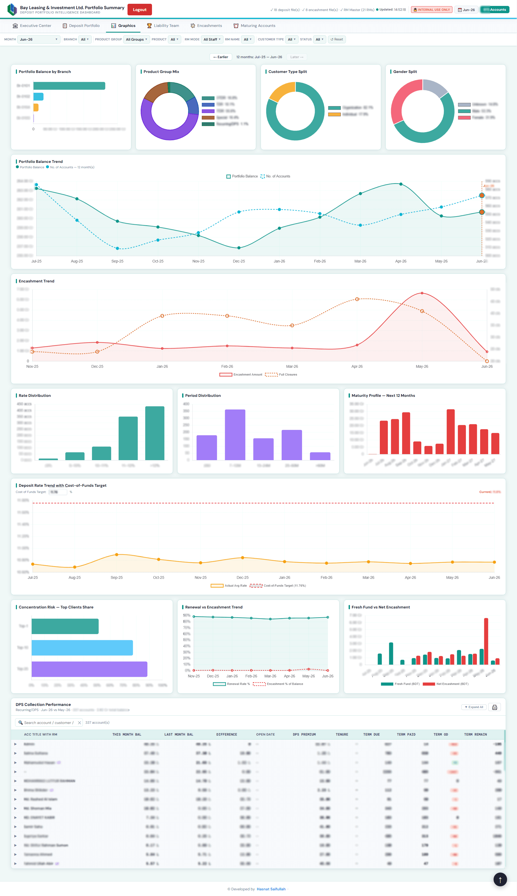
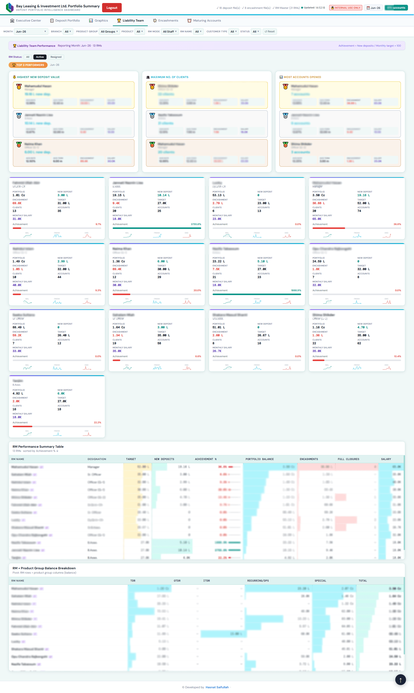
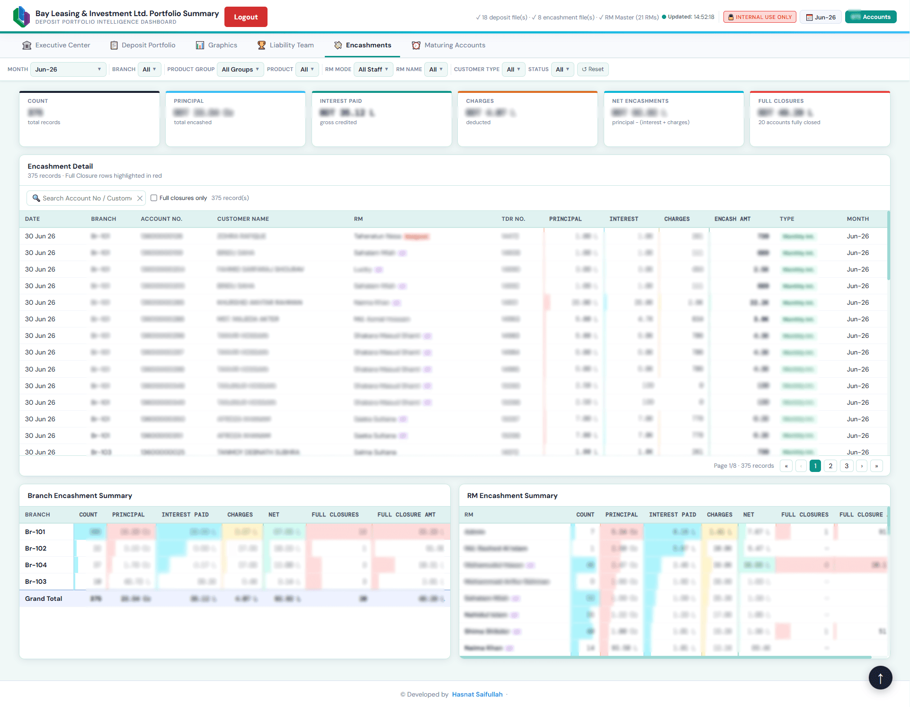
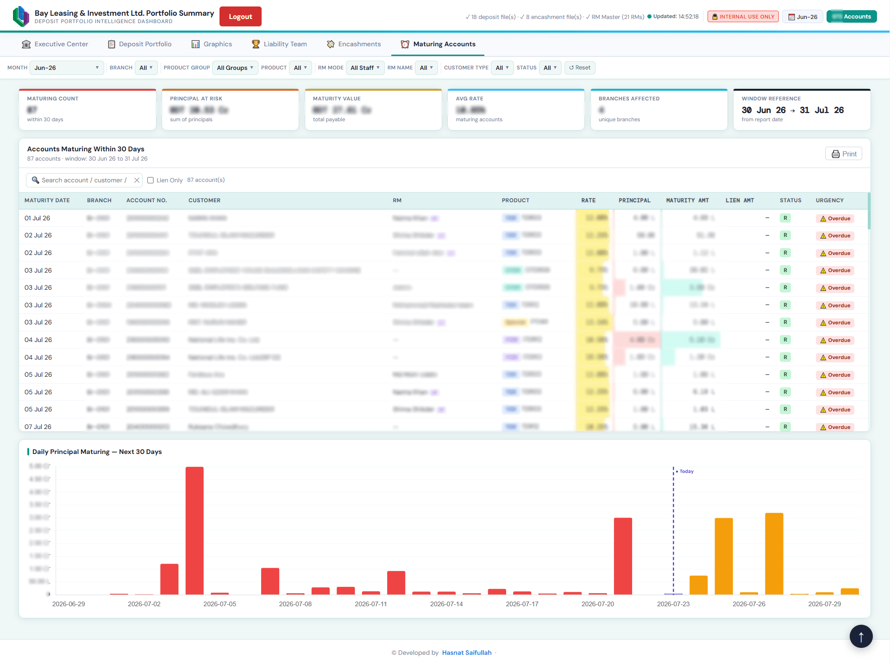

Bike Lifecycle & Maintenance Tracker
Problem
Vehicle running costs were tracked manually in notebooks, making mileage, fuel spend, and service due-dates impossible to analyse. There was no way to see when oil, tyres, or brake pads were due, or what the bike actually cost to own per kilometre.
Solution
Built an automated vehicle-health tracker in Looker Studio connected to Google Sheets and BigQuery. The dashboard calculates odometer and daily averages, counts down parts-replacement intervals, and logs fuel-station history and full ownership cost — all updated from structured trip and expense data.
Impact
Turns scattered logs into a single real-time view of ownership cost and maintenance risk — enabling proactive servicing, clearer cost-per-kilometre analysis, and data-driven decisions that keep the vehicle in optimal condition.










MIS Dashboard Suite for Loan & Deposit Portfolio
Problem
Loan and Deposit portfolio data at Bay Leasing & Investment Ltd. (BLIL) was spread across every branch and pulled manually into static reports. Preparing them was slow and error-prone, and there was no single, interactive view anyone could drill into for timely decisions.
Solution
Solely built a company-wide MIS platform — initiated at the request of the Managing Director — that consolidates Loan and Deposit portfolio data from all branches into one interactive web dashboard, replacing static reports and manual data pulls. Multi-sheet Excel files are parsed in the browser via SheetJS/XLSX (so no database is needed), Chart.js renders KPIs, trend charts, sparklines and portfolio breakdowns, and PHP session-based authentication secures access. It started in November 2025 as a Power BI prototype and was re-architected in April 2026 as a standalone web dashboard for more flexibility, easy deployment on any machine, tighter access control and faster iteration — and remains in active development.
Impact
Senior management uses it for monthly business reviews and meeting presentations, while 15–20 back-office colleagues rely on it for Bangladesh Bank (BB) reporting — cutting 2–3 hours of manual data pulling, sorting and compiling down to a few clicks. Pre-calculated KPIs, time-series data and multi-dimensional filtering (branch, product, RM, customer segment) give instant drill-down, establishing one source of truth across the full company portfolio.
- Company-wide coverage — every branch's Loan & Deposit portfolio under one interactive interface
- Saves 15–20 back-office users 2–3 hours per Bangladesh Bank report, now down to a few clicks
- Pre-calculated KPIs, time-series data and multi-dimensional filtering for instant drill-down
- Evolved from a Power BI prototype (Nov 2025) to a standalone web app (Apr 2026) — in active development
- Single source of truth for monthly business reviews, management presentations and regulatory reporting
Flying Tesla of BD — Mission Impossible
Elon Musk spent a decade and a few billion dollars trying to put a Tesla in the sky. I spent a few weekends putting a rickshaw in one instead — bolted-on thrusters, a Dhaka skyline absolutely covered in live wires, and approximately 0% useful outcome. It is a browser game, it is free, and it is very serious about not being serious.
No engine, no framework, no image files, no audio files. Everything you see is drawn in code and everything you hear is synthesized on the spot, mostly because downloading an asset felt like too much effort.
- Every pixel drawn in code — rickshaw, wires, leaning poles, parallax skyline, all of it
- All sound synthesized live with WebAudio, including the crash you will hear a lot
- Wires generated on the fly, always leaving a gap wide enough for you to miss and blame yourself
- Load-shedding mode: screen dims, rickshaw autopilots for 5 poles, you tap uselessly
- Pause, mute, and a high score your browser remembers long after you close the tab in shame


Portfolio Monitoring & Risk Dashboards
Executive Summary
Designed management-ready Power BI dashboards to monitor portfolio health, NPL trends, and early warning signals using live data feeds.
- Reduced manual reporting effort by ~40%
- Enabled early identification of risky accounts
- Improved decision turnaround time for senior management
Corporate Branding & Creative Design
Problem
Bay Leasing & Investment Ltd. needed high-impact, print-ready visual assets that maintained a consistent, professional corporate identity across branches and marketing materials — without a unified design system.
Solution
Designed a suite of corporate identity assets in Adobe Photoshop and Adobe Illustrator — high-resolution lift lets, large-format banners, and marketing collateral — all built on clean, professional layouts and a modernized brand aesthetic.
Impact
Modernized the brand aesthetic and enhanced branch-level visibility and client engagement across the organization's physical and digital touchpoints.
- Modernized brand aesthetic with clean, professional layouts
- High-resolution Lift Let and Large-format banner designs
- Enhanced branch-level visibility and client engagement


Corporate Bifold Brochure Portfolio
Project Overview
Conceptualized and designed a professional Bifold brochure for Optima Solution, balancing high-density financial information with a clean, trustworthy corporate aesthetic.
- Optimized layout for 4-page content flow and readability
- Precision-aligned typography and brand-consistent color palettes
- High-resolution graphics for clear zoom and readability
- Prepared print-ready files with appropriate bleeds and margins